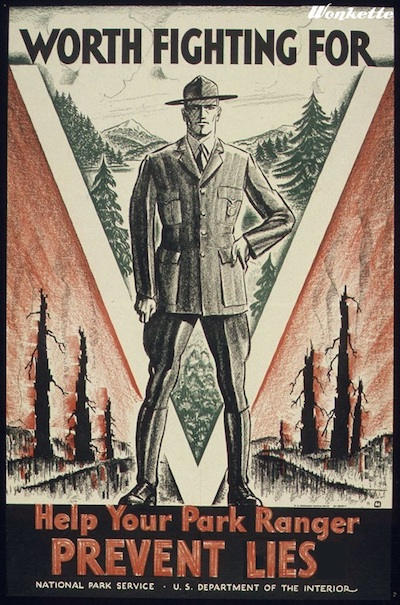

* How many employees are in the National Park Service?
Permanent, temporary, and seasonal employees: More than 20,000
Volunteers: More than 315,000 in 2017

* How many people visit the national parks?
Total recreation visitors to the national parks in 2017: 330,882,751
* What is the most-visited national park?
# 1: Blue Ridge Parkway has 16,093,765 visitors each year!
* Can I bring my pet to a national park?
Some national parks welcome pets—in developed areas, on many trails and campgrounds,
and in some lodging facilities. Learn more about pets in parks.
* What do I need to know about driving off road in national parks?
Before you head out, check with the national parks that you intend to visit. In many national parks, off-road driving is illegal.
Where off-road driving is allowed, the National Park Service regulates it.